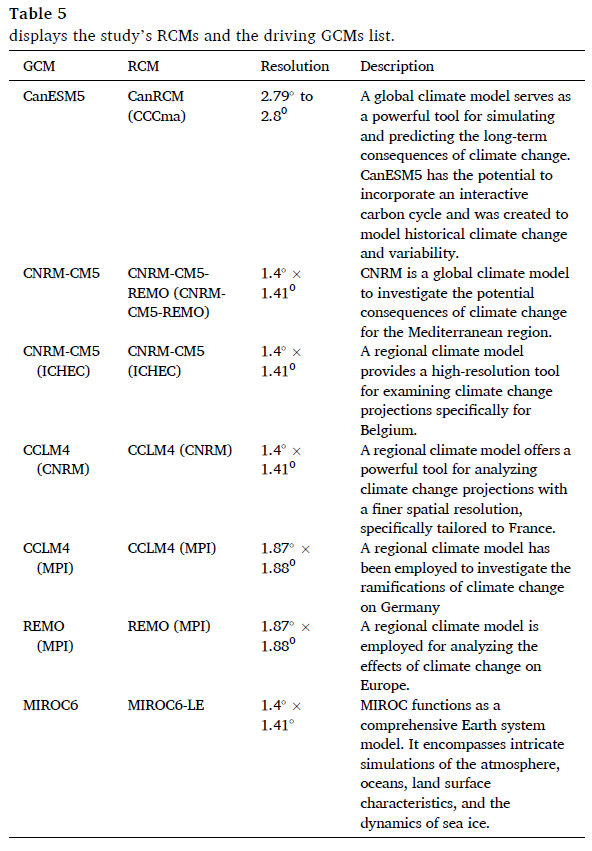

Bias correction in climate models: A literature review#
Introduction#
Global Climate Models (GCMs) integrate physics, chemistry, and biology principles. They are essential tools for understanding climate systems and future projections and how their diverse processes interact with different variations, like climate change. This makes them indispensable in the planning and decision-making processes. However, especially in regional analysis, GCMs have spatial and temporal limitations when representing hydroclimatic variables, such as precipitation. This reduces the precision of regional impact studies and affects decision-making for sustainable development.
For that, bias correction methods have been used to reduce the uncertainty in the GCM’s representation of precipitation. The most common methods have been traditional statistical methods. Still, recent advancements in machine learning (ML) have increased interest in their use in the bias correction process, as highlighted by the four (4) papers reviewed in this document.
Paper Reviews#
Paper 1: Comparison of Conventional and Machine Learning Methods for Bias Correcting CMIP6 Rainfall and Temperature in Nigeria#
Authors: Bashir Tanimu et al.
Key Highlights:
The study examines the performance of three machine learning-based bias correction (ML BC) methods alongside ten traditional BC approaches, focusing on correcting biases in GCMs simulations of rainfall, Tmx, and Tmn in Nigeria.
Data Used:
Simulations from four CMIP6 GCMs for four shared socioeconomic pathways (SSP126, SSP245, SSP370, and SSP585). The models and their spatial resolutions are:
GCM
Developing Centre
Spatial Resolution
BCC-CSM2-MR
Beijing Climate Centre, China
1.125° × 1.125°
CMCC-ESM2
Euro-Mediterranean Centre, Italy
0.942° × 1.25°
MRI-ESM2-0
Meteorological Research Institute, Japan
1.125° × 1.125°
The climate research unit (CRU) monthly rainfall, Tmx, and Tmn datasets for 1975–2014 were used as the reference point.
Methodology:
To align the chosen GCMs with the reference data (CRU) resolution, the GCMs were regridded to a resolution of 0.5° × 0.5° using the bilinear interpolation approach.
Thirteen distinct bias correction (BC) methods were applied to rectify the bias in the regridded GCMs for rainfall, Tmx, and Tmn from 1975 to 2014.
The six most promising BC procedures were identified using three statistical metrics: relative standard deviation (rSD), percentage of bias (PBIAS), and normalized root mean square error (NRMSE).
Key Results:
Random Forest (RF) was ranked as the best method for reducing bias in climate variables in Nigeria. The better performance of RF may be due to its inherent capacity to handle nonlinear relationships.
Machine Learning Tools Used:
Artificial Neural Network (ANN): Regression-based statistical techniques used to establish complex, nonlinear relationships between GCM simulated variables (predictors) and local climate variables (predictands). They are trained based on historical data and reduce biases to adjust the error to a minimal value.
Random Forest (RF): Combines the output of multiple decision trees generated from a bootstrap sample to arrive at a single result.
Support Vector Machine (SVM): A supervised learning method to identify a function that optimally matches the training data while maximizing the error tolerance margin.
Strengths:
Comprehensive comparison of multiple bias correction methods using traditional and machine learning approaches.
The study uses climate data with quality control and appropriate metrics to evaluate bias correction (BC) models, improving the spatial resolution of future climate projections.
Limitations:
Climate variability across different geographical areas affects model performance, requiring context-specific validations.
The quality of validation data and the selection of performance metrics are crucial for reliable results.
Further research is needed to develop regional climate impact models and measure uncertainty in climate projections.
Evaluating advanced machine learning models, such as LSTM, could improve bias correction in GCMs.
Relevance:
This paper addresses inaccurate climate projections in Nigeria by providing effective bias correction methods that improve the reliability of climate data.
It emphasizes the importance of evaluating downscaling models in specific contexts to obtain accurate and relevant results for local decision-making.
Paper 2: Machine learning and CORDEX-Africa regional model for assessing the impact of climate change on the Gilgel Gibe Watershed, Ethiopia#
Authors: Amanuel Kumsa Bojer et al.
Key Highlights:
This study innovates by coupling ML techniques with the CORDEX-Africa RCM to assess climate change impacts on Ethiopia’s Gilgel Gibe Watershed, improving the accuracy and detail of climate projections.
The present study aimed to model and predict potential trends in long-term climate change time series and examine their correlation with fluctuations in the Gilgel Gibe watershed.
Data Used:
Daily rainfall, maximum temperature (Tmax), minimum temperature (Tmin), wind speed, relative humidity, and solar radiation hour data from 4 meteorological stations: Gibe, Omo Nada, Deneba, and Jimma collected by the Ethiopian Meteorological Institute (EMI) from 1993 to 2023.
CHRIPS database: soil data, geology data, and Digital Elevation Model (DEM).
CORDEX-Africa is a regional climate model that offers downscaled climate projections with finer spatial resolution, detailing temperature, precipitation, and other climate variables.
The performance of GCM-driven bias-corrected RCMs in replicating the observed baseline climate and projecting future climate change was assessed using the RCMs MIROC5 and 6(CNRM), CCCma (CanESM), CCLM4 (CNRM), CCLM4 (MPI), and REMO (MPI).

Methodology:
Various bias correction methods were evaluated and applied to historical observation datasets from 1993 to 2009 to ensure accurate climate projections.
Linear scaling (LS)
Delta change (DC)
Variance scaling (VS)
Power transformation (PT)
Distribution mapping (DM)
The hydrological simulation model was constructed using three ML techniques:
Random forest (RF)
CatBoosting (CB)
Extra trees (ET)
Key Results: The Delta Method (DM) was the best for temperature data, and the Power Transformation (PT) for precipitation data. The CatBoost regression algorithm was selected due to its robust performance in simulating future climate scenarios, accurately predicting precipitation and temperature changes under various emission pathways, handling large datasets, and ability to automatically handle categorical features common in climate data.
Strengths: The integration of ML models alongside traditional hydrological models like SWAT in assessing the impact of climate change on the Gilgel Gibe Watershed offers a synergistic approach that enhances the robustness and reliability of the analysis, ultimately providing valuable insights for informed decision-making and sustainable water resource management in the face of climate change.
Limitations: The study acknowledges the inherent biases in climate models and the challenges in accurately capturing all spatial and temporal patterns. The reliance on historical data may limit the applicability of findings to future conditions, especially under extreme climate scenarios.
Relevance:
The findings are crucial for informing water resource management and adaptation strategies in the Gilgel Gibe Watershed, vital for local agriculture and sustainability.
The research contributes to the broader understanding of climate change impacts in Africa, highlighting the need for innovative climate modeling and risk management approaches.
Paper 3: A comprehensive comparison of bias correction methods in climate model simulations: Application on ERA5-Land across different temporal resolutions#
Authors: Pranav Dhawan et al.
Key Highlights:
The research compares statistical and machine learning (ML) methods for bias correction in precipitation and temperature data.
It emphasizes the performance of these methods across different temporal resolutions: monthly, daily, and hourly.
The study utilizes ERA5-Land reanalysis data, which is noted for its high spatial and temporal resolution.
Data Used: Hourly values from both observed datasets and reanalysis ERA5 datasets from 1991 to 2020.
Methodology:
The study divided the data into training (1991-2014) and testing (2015-2020) phases.
Statistical methods for bias correction:
Linear Scaling (LS)
Variance scaling (VS)
Quantile Mapping (QM)
Power transformation (PT)
Quantile Mapping (QM)
Multivariate Bias Correction (MBC)
Machine Learning for bias correction:
Decision tree regressor (DTR)
EXtreme gradient boosting (XGB)
Support vector regression
Key Results:
Machine learning methods, particularly XGB, showed superior performance in temperature bias correction at an hourly scale.
The DTR method performed best for precipitation, while MBCp was the most effective for temperature.
Statistical methods generally outperformed ML methods in the testing phase, especially for precipitation.
Strengths:
The study thoroughly compares various bias correction techniques, contributing valuable insights into their effectiveness.
It addresses the challenges of complex mountainous orography in the study region.
The use of high-resolution ERA5-Land data enhances the reliability of the findings.
Limitations:
The performance of models showed degradation during the testing phase, indicating potential overfitting in some cases.
The study’s findings may be limited to the specific geographical context of the Autonomous Provinces of Bolzano and Trento.
Relevance:
The findings are significant for hydrological modeling and climate risk assessment, particularly in regions with limited observational data.
The research underscores the importance of accurate bias correction methods in improving the reliability of climate data for water resource management and planning under climate change.
Paper 4: Deep learning-based bias correction of ISMR simulated by GCM#
Authors: Sumanta Chandra Mishra Sharma et al.
Key Highlights:
This research evaluates the effectiveness of convolutional architecture, specifically a Convolutional Neural Network for Bias Correction (CNNBC), in capturing and rectifying the systematic bias inherent in climate model simulations aimed at correcting biases in Indian Summer Monsoon Rainfall (ISMR) data simulated by General Circulation Models (GCMs).
The study illustrates the viability and efficacy of employing Convolutional Neura Networks (CNNs) for bias correction in Indian Summer Monsoon Rainfa l (ISMR) data generated by General Circulation Models (GCMs), with significant implications for climate change adaptation and mitiga ion strategies in Ina. By
Data Used:
Precipitation simulated bythe Indian Institute of Tropical Meteorology version of the climate forecast system (IITM CFS) and Global Precipitation Climatology Project (GPCP), in a spatial resolution of 1° x 1° 1o, where ach grid value represents the JJAS (June, July, August, September) av rage of precipitation estimates for that particular grid lo, red is from 1981 t
. As an
**Methodol - The study divided the data into training from 1981-2004 for deep learning models and 1999 to 2004 for the statistical technique; and testing (2005-2010) phases. 020) phases.
Statistical methods forance scal1ng (VS) 3. Quan 2. Quantile delta mapping (QDM) tile Map35ng (QM) 4. Power t s Correction (MBC)
Machine Learning for 1. Super resolution deep residual network (SRDRN)ee regressoConvolutional Neural Network for Bias Correction (CNNBC) vector regres
The SRDRN, compared to the other methods, is the one that shows the best performance in replicating the observed precipitation trends; however, it fails to capture the variance present in the observed data fully.
The proposed model (CNNBC), together with QM and QDM shows a better ability to reflect both the mean and variability of the spatial mean rainfall
The CNNBC model outperforms other bias correction techniques regarding precision and reliability of precipitation estimates, thanks to the combination of an advanced neural network architecture, maintenance of statistical properties, use of multiple ensembles, and a solid quantitative evaluation.ples ecially for precipitationUsing a 3D-CNN architecture distinguishes this study from other deep learning-based bias correction methods.s intliability of the findings. The study primarily focuses on univariate bias correction, leaving room for future exploration of multivariate bias correction techniques. ces of Bolzano and - The findings are significant for policymakers and stakeholders involved in climate change adaptation and resource management in India, as they provide more reliable precipitation projections.
The research paves the way for further applications of deep learning in climate data correction across various variables and regions, contributing to improved climate modeling and forecasting effort
Comparison of Approaches#
Methodology/Technique |
Key Strengths |
Key Limitations |
Example Papers |
|---|---|---|---|
Artificial Neural Network (ANN) |
Remarkable flexibility and versatility; accommodating a wide range of data types, capturing complex data relationships, and adjusting to intricate patterns. |
Demand significant computational resources and substantial training data. |
Tanimu et al., 2024 |
Random Forest (RF) |
Manage complex and nonlinear data relationships; exceptional ability to capture nonlinear connections in climate data. |
Can be sensitive to the quality of the input data. |
Tanimu et al., 2024; Bojer et al.,2024 |
Support Vector Machine (SVM) |
Resilient to outliers and effective for nonlinear data using kernels. Performs well with high-dimensional data, even with limited samples. Effective in climate downscaling. |
Computationally intensive for large datasets. Sensitive to hyperparameter selection. Limited interpretability, especially with complex kernels. |
Tanimu et al., 2024 |
Extra Trees (ET) |
High accuracy and speed in constructing trees; growing multiple trees in parallel can lead to efficient computation. |
Can be sensitive to the quality of the input data; their results can be complicated to interpret due to the ensemble nature of the model. |
Bojer et al.,2024 |
CatBoost (CB) |
It is superior in predicting data with high dimensionality and noise, making it effective for complex datasets. |
It may require more training time than simpler models. |
Bojer et al.,2024 |
Decision tree regressor (DTR) |
Highly interpretable, easy to understand, and quick to train. |
It suffers from overfitting and tends to lose performance with large datasets and complex problems. |
Dhawan et al.,2024 |
EXtreme gradient boosting (XGB) |
Highly accurate and robust, especially with large datasets, thanks to its ensemble approach and regularization. |
Less interpretable and requires careful hyperparameter tuning. |
Dhawan et al.,2024 |
Support vector regression(SVR) |
Effectively handles non-linear relationships and high-dimensional data, offering flexibility and strong performance in complex scenarios. |
Computationally intensive, challenging to interpret, and requires careful tuning of parameters for optimal results. |
Dhawan et al.,2024 |
Super-resolution deep residual network (SRDRN) |
capable of effectively extracting features from the input data, which helps capture important patterns and relationships, providing more efficient training and better performance in reconstructing high-quality outputs. |
Can be sensitive to the quality of the input data. ; It can suffer from overfitting. |
Sharma et al.,2024 |
Convolutional Neural Network for Bias Correction (CNNBC) |
Preserves the statistical properties and spatial correlation relationships among grid points; effectively captures spatial dependencies in the data through its convolutional layers. |
highly dependent on the availability of high-quality training data; it can be complex to implement and tune. |
Sharma et al.,2024 |
The principal challenge in bias correction rests in the quality and availability of data. In many regions, especially developing areas, the data is limited or incomplete, and the Variability in data sources, measurement techniques, and quality control processes further adds uncertainty, affecting the effectiveness of statistical and machine learning-based methods.
Moreover, advanced machine learning models, particularly deep neural networks, demand significant computational power and expertise, which may not be accessible in all contexts.
Considering the performance of the machine learning methods, it’s essential to consider the overfitting challenge, where models perform well on training data but fail to generalize to unseen scenarios, such as future climate conditions. This risk is particularly pronounced when training on limited datasets. Also, this is associated with Machine learning models often operating as “black boxes,” making their outputs harder to understand and trust than traditional statistical methods’ transparency.
Finally, the regional specificity of bias correction adds complexity. Methods that work well in one geographical area may perform poorly in another due to differences in climatic conditions, requiring substantial customization. Developing adaptable frameworks for different regions and contexts remains an ongoing challenge.
Future Directions#
Considering the challenges, hybrid approaches that combine the strengths of traditional statistical methods and machine learning models could offer promising solutions. For example, preprocessing data with statistical methods before applying machine learning algorithms can enhance model robustness and accuracy.
Regional adaptation frameworks tailored to local climatic conditions and data availability are essential for improving the usability of bias correction methods. For that, each region, with its unique climatic and geographical features, will require a customized application of these methods to ensure they align with the specific needs of the area and the study parameters. This tailored approach enables more precise and relevant results, enhancing climate projections’ quality and utility for local decision-making.
n## Conclusion
Traditional statistical methods, such as Quantile Mapping and Power Transformation, remain highly relevant in bias correction processes. Their strengths lie in their simplicity, interpretability, and well-established mathematical foundations, making them particularly effective for addressing biases in small datasets or regions with limited computational resources. On the other hand, bias correction methods based on machine learning are diverse, ranging from more straightforward techniques like Linear Regression or Random Forest to more complex models like Convolutional Neural Networks (CNN), allowing the handling of complex, nonlinear relationships between climate model outputs and observed data, making them particularly effective in scenarios where traditional statistical techniques might struggle to capture variability or adapt to a large dataset.
The selection and effectiveness of these methods, both traditional and machine learning, depend on multiple factors, including temporal scale (daily, monthly, or annual), spatial scale (regional or global), available input data, and the climatic characteristics of the study area. This implies that bias correction approaches must be carefully tailored to the specific goals and context of the analysi
Questions About Methodologies and ML Approaches#
Data Preparation and Preprocessing:
How do they establish the training and testing period?
How do we know the base data set is robust and sufficient?
What preprocessing steps were applied to the datasets?
What volume and diversity of data are required to train these models effectively?
Model Architecture:
Why were specific architectures chosen for these tasks?
Under what conditions is it better to have more complex architecture?
What’s a convolutional process, and how do to address
What’s a hyperparameter tuning? it?fi## References
Tanimu, B., Bello, A. A. D., Abdullahi, S. A., Ajibike, M. A., Yaseen, Z. M., Kamruzzaman, M., … & Shahid, S. (2024). Comparison of conventional and machine learning methods for bias correcting CMIP6 rainfall and temperature in Nigeria. Theoretical and Applied Climatology, 1-30. https://doi.org/10.1007/s00704-024-04888-9
Bojer, A. K., Woldetsadik, M., & Biru, B. H. (2024). Machine learning and CORDEX-Africa regional model for assessing the impact of climate change on the Gilgel Gibe Watershed, Ethiopia. Journal of Environmental Management, 363, 121394. 4797, https://doi.org/10.1016/j.jenvman.2024
Dhawan, P., Dalla Torre, D., Niazkar, M., Kaffas, K., Larcher, M., Righetti, M., & Menapace, A. (2024). A comprehensive comparison of bias correction methods in climate model simulations: application on ERA5-Land across different temporal resolutions. Heliyon. https://doi.org/10.1016/j.heliyon.2024.e40352
Sharma, S. C. M., Kumar, B., Mitra, A., & Saha, S. K. (2024). Deep learning-based bias correction of ISMR simulated by GCM. Atmospheric Research, 309, 107589.https://doi.org/10.1016/j.atmosres.2024.107589
complex kernels. | Tanimu et al., 2024 |